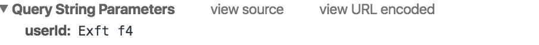

URI 与 URL
URI：(Uniform Resource Identifier 的缩写，统一资源标识符)。
URL：(Uniform Resource Locator 的缩写，统一资源定位符)。
关系：
URI 属于 URL 更低层次的抽象，一种字符串文本标准。
二者的区别在于，URI 表示请求服务器的路径，定义这么一个资源。而 URL 同时说明要如何访问这个资源（http://）。
问题
由于融合 xx界 和 xx街 的业务，前者的提现功能通过
iframe加载后者的提现页面来完成。
此时，会将前者的userId通过rsa加密之后拼接到URL中，
后者获取userId之后会与后端做些交互。
首先，简单将 URL 表示为 “http://127.0.0.1:8043/wallet/withdraw?userId=Exft+f4"，
那么要获取的 userId 就是 Exft+f4。
在测试的时候，发现有些账号没有问题，有些账号出现问题，感觉是一个偶然性的问题，然后继续追踪。
首先查看日志，确定 userId 字段出现问题，存在账号 userId 字段对应不上，解密错误。
Exft+f4 中的 + 被转义成了 空格，也就是变成了 Exft f4，
这就很奇怪了，我明明直接在控制台获取的 userId 就是 Exft+f4 啊。
然后打开 Chrome Network 查看请求发现，query 被自动转义了，如下图

也就是当服务器获取 query string 的时候(PS: 这里使用后端 Java 提供的方法，获取 userId 并调用 Java 同步方法渲染页面)，已经不正确了。
解决问题
既然知道了问题所在，那就简单了。
首先，看到浏览器中的 view URL encoded，只要切一下，结果就是正确的了。
原来问题的症结在没有做 encode，所以其实只需要在拼凑 URL 的时候，将 userId 做一下编码就好了。
encodeURI 和 encodeURIComponent 的区别
The encodeURI() function encodes a Uniform Resource Identifier (URI) by replacing each instance of certain characters by one, two, three, or four escape sequences representing the UTF-8 encoding of the character (will only be four escape sequences for characters composed of two “surrogate” characters).
The encodeURIComponent() function encodes a Uniform Resource Identifier (URI) component by replacing each instance of certain characters by one, two, three, or four escape sequences representing the UTF-8 encoding of the character (will only be four escape sequences for characters composed of two “surrogate” characters).
也就是 encodeURI 对整个 URI 进行编码，而 encodeURIComponent 是对 URI 的组成部分做编码。
注意: 然而事实上不止这么点区别，encodeURI 转义的字符也和 encodeURIComponent 不同。
encodeURI 不会转义以下字符
1.保留字符:
; , / ? : @ & = + $
2.非转义的字符:字母 数字 - _ . ! ~ * ' ( )
3.数字符号#
encodeURIComponent 不会转义以下字符
1.非转义的字符:
字母 数字 - _ . ! ~ * ' ( )
以上，encodeURI 无法产生能适用于 HTTP GET 请求的 URI。
例如对于 XMLHTTPRequests, 因为 "&", "+", 和 "=" 不会被编码，然而在 GET 请求中它们是特殊字符，
所以为了避免服务器收到不可预知的请求，应该使用 encodeURIComponent 进行转义。
因此，上面的 “http://127.0.0.1:8043/wallet/withdraw?userId=Exft+f4"，不能简单使用 encodeURI 方法来转义。
而是应该将 userId 单独使用 encodeURIComponent 进行转义后拼接。
与 encodeURI 和 encodeURIComponent 对应的解码是 decodeURI 和 decodeURIComponent，
因此在获取到 URI 之后只需要解码就可以获取到原值。
获取 URL 参数的正确姿势：
总结
这本应该是一个早就了解的问题，为何会到现在？
想了下，大概是以下原因：
- 此前工作中
URL很少是特殊字符的，一般为正常英文字符。 - 很少需要获取
URL上的query做再请求的参数，即使作为参数，也是已知的字符。 - 框架(库)已经做了转码处理。
- 此前只是单纯的调用，对其一知半解。
所以往后需要注意的是对于任何不可控的字符作为 URL 部分的内容都需要用 encodeURIComponent 进行转义。
目前工作中遇到常见的场景是手动拼接 URL，比如活动页面的回跳，但是一般也不会出现特殊字符、中文等情况。
还有一个常见的应该就是搜索了吧，需要使用用户输入的关键字作为 keywords，然而用户输入的字符不可控制，因此必然需要转义。
写到这时，想起在前公司写的搜索，是否有问题呢？去看下…